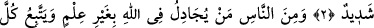

KIYÂMET DEPREMİ
Rahmân ve Rahîm (olan) Allâh’ın adıyla
1. Ey insanlar! Rabbinizden korkun! Çünkü kıyâmet vaktinin depremi müthiş bir
şeydir!
2. Onu gördüğünüz gün, her emzikli kadın emzirdiği çocuğu unutur, her gebe
kadın çocuğunu düşürür. İnsanları da sarhoş bir halde görürsün. Oysa onlar sarhoş
değillerdir; fakat Allah’ın azabı çok dehşetlidir!
3. İnsanlardan, bilgisi olmaksızın Allah hakkında tartışmaya giren ve her inatçı
şeytana uyan birtakım kimseler vardır.
4. Onun (şeytan) hakkında şöyle yazılmıştır: Kim onu yoldaş edinirse bilsin ki
(şeytan) kendisini saptıracak ve alevli ateşin azabına sürükleyecektir.
“Ey insanlar! Rabbinizden korkun!” yâni işlerinizin mâliki ve sizi terbiye eden
Rabbiniz’e itâat ederek O’nun cezâ ve azâbından sakının. “Çünkü kıyâmet vaktinin
depremi müthiş bir şeydir!” “
” kelimesi, harflerinin tekrar edilmesinin de delâlet
ettiği üzere, peş peşe gelen şiddetli sarsıntı demektir. Çünkü “zelzele” fiili, “zelle”
fiilinin muzâafıdır. “
” kıyâmet demektir. el-Müfredât’ta belirtildiği üzere kıyâmet
gününde hesap çabuk görüleceği için ona bu isim verilmiştir.
Âlimler bu depremin vakti hakkında ihtilaf etmişlerdir. Kimisi bunun, dünyada
güneşin batıdan doğmasından az önce meydana geleceğini söylemiştir. Bu görüşe göre
emzikli kadınların çocuğunu unutması, gebelerin çocuğunu düşürmesi gerçek anlamında
olur. Bazılarına göre ise bu deprem kıyâmet gününde olur. Bu durumda emzikli
kadınların çocuğunu unutması ve gebelerin çocuğunu düşürmesi, bir temsil olduğu
yorumu yapılır. En âşikâr olanı ise İbn Abbâs (r.anhümâ)’nın “
kıyâmetin
kopmasıdır.” sözleridir. Bu durumda bu ifâdenin mânâsı şöyle olur: Kıyâmet koptuğunda